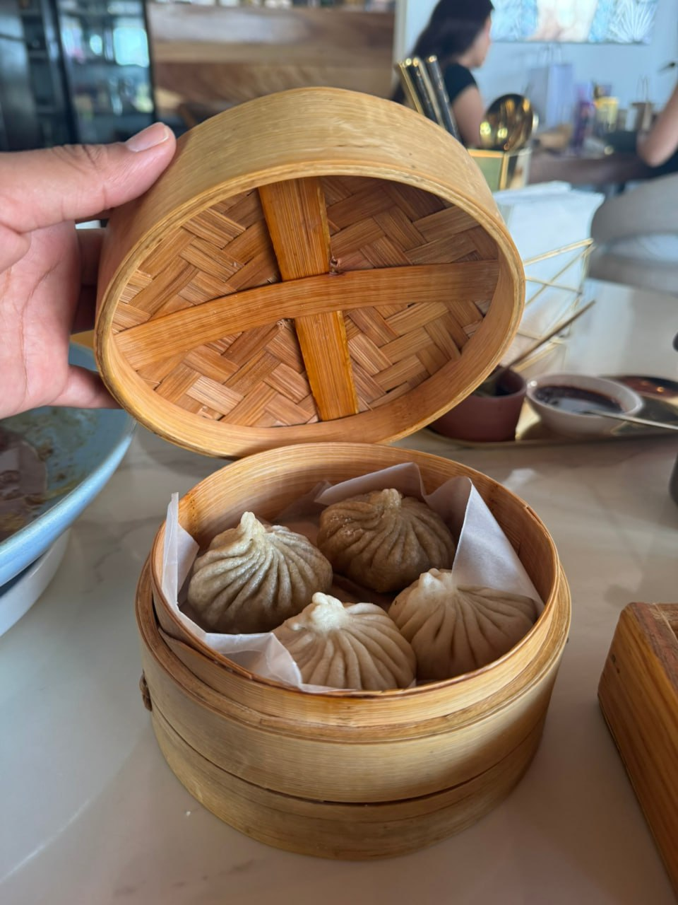
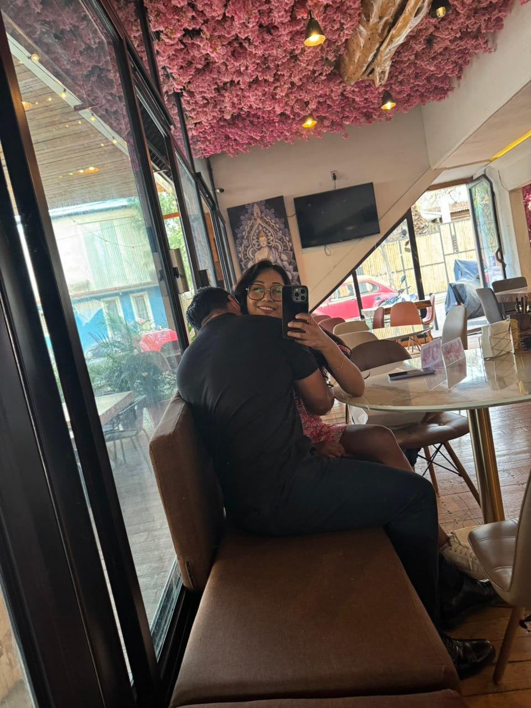
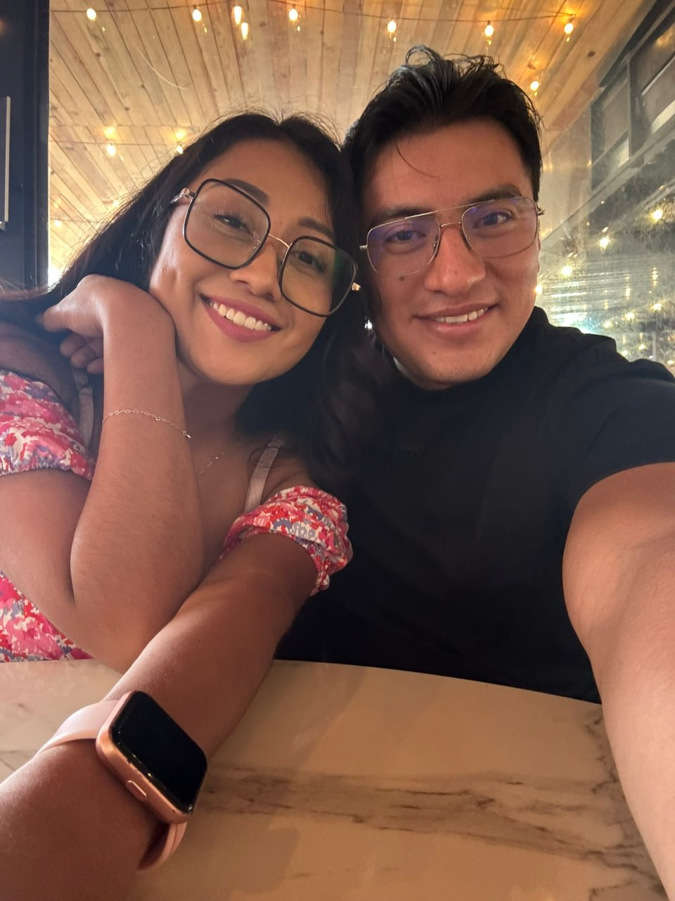
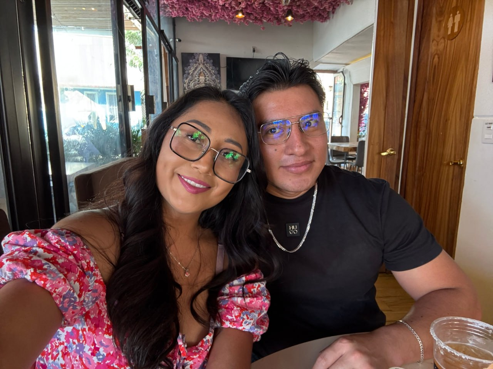
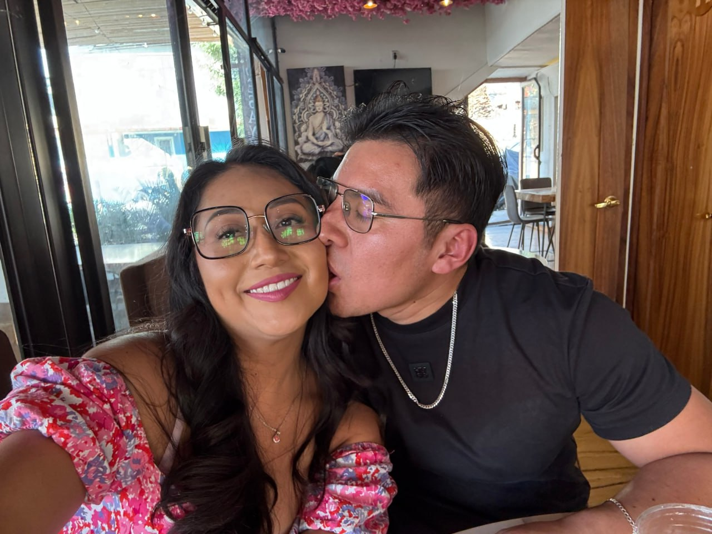
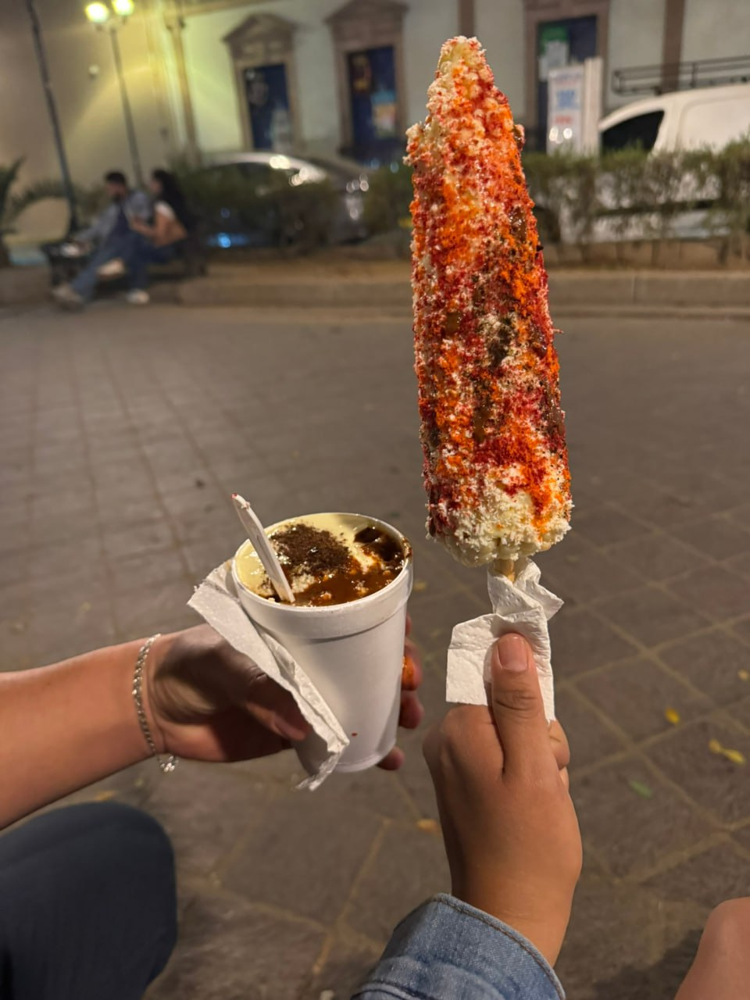

commit 0013 Date: 20 Feb 2026 🟡 A Planned Day 🟢 Git Message feat: first planned day together completed ⚪ Story Desde hacía unos días se me antojaban unos dumplings. Buscamos juntos varios lugares hasta que encontramos Yabalá Ramen. Desde ese momento supimos qué haríamos el 20 de febrero. A diferencia de otras veces, ese día me arreglé con más calma. Me puse un vestido y unos tenis. Tú también ibas diferente. Creo que era la primera vez que te veía con zapatos. Sin decirlo, los dos sabíamos que ese día era especial. Fuimos hasta Yabalá Ramen. El lugar era tan bonito como se veía en las fotografías. Pedimos ramen, dumplings y un suero. Todo estaba increíble. Mientras esperábamos la comida, como casi siempre, dije: > "Foto." Nos tomamos muchas fotografías. Una de mis favoritas es aquella donde simplemente me abrazas mientras sonrío a la cámara. Después de comer seguimos con el plan que ya habíamos hecho desde días antes. Queríamos vivir una experiencia nueva juntos. Sin prisas. Sin expectativas. Solo descubriendo, poco a poco, una etapa que ninguno de los dos había compartido antes. Al salir caminamos un rato por el Parque del Llano. Compramos un elote y un esquite. Después fuimos a tu casa. Al día siguiente despertamos, fuimos a desayunar y, como tantas otras veces, dejamos que el día terminara sin hacer demasiado ruido. 🟣 Developer Notes First planned day successfully completed. Yabalá Ramen added to favorites. Another ordinary day archived. 🟢 Impact on Project + New favorite ramen discovered. + New shared experience unlocked. + A planned day successfully archived. 🟢 Commit Status ✔ Completed ✔ Reviewed ✔ Ready for Release
🖼 Recuerdos

Ramen, bebidas y postre. Todo estaba increíble.

Los dumplings que empezaron todo.

Incógnito.

Una foto más.

Foto por bonitos.

Beso en la mejilla, ya es costumbre y tradición.

Glotonería... y así acabó el día.
1 / 7
⬅ Regresar al Commit History